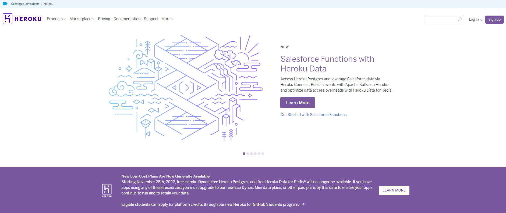

Откройте браузер и в адресной строке введите – heroku.com. Перед вами откроется вот такая страница:
Ох, как много здесь можно почитать и посмотреть, но нам некогда это делать. Нам нужен аккаунт на Heroku!
Поэтому, переходим к следующему шагу и поищем, где же на этой странице кнопка регистрации.